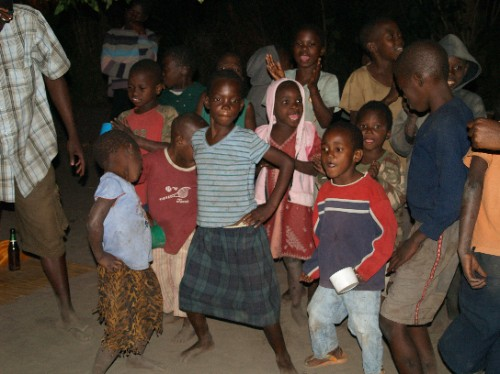

Malawi is a country somewhere in Africa. The pop singer Madonna adopted a child
from this country.
More knowledge gained prior to entering Malawi
There is a long lake in Malawi (Lake Malawi), one of the longest
lakes in the world. In some parts of the lake bilharzia is found.
During the colonial times, Malawi was called Nyasaland.
Similarly to many other African countries, Malawi was ruled for many years (approx. 30)
by the same guy, who refused to introduce the multi-party system and
crushed any opposition (using murder as the means) —
Hastings Banda took power right after the independence from Britain (1964?) and
refused give it up even when he was already 90 years old.
During his time the state of the Malawi economy deteriorated.
Now there is a new president, who has managed to turn the economy
around again, to the positive direction.
The people of Malawi speak English, it is
one of the two official languages. The other is Chichewa.

Malawi children in a dancing and singing performance.
Knowledge after a 5-night stay in Malawi
The people of Malawi look similar to East-Africans encountered
previously, but seem to speak better English. Children like to wave, but
also hold hands. They often approach you with "Give me my pen!",
or "Give me my money!".
In addition to Chichewa, many other tribes inhabit Malawi, e.g. Tonga.
Lake Malawi is quite wavy. There are at least 2 overlanders' camps
at the lake (Chitimba, Kande). These camps are run by white people,
behind the gate a local woodcarving industry has emerged.
And also drug dealing.
Locals are good at woodcarving. Only men do it, women are at home
and do housework.
Ebony, teak and mahogany trees are turned into tables, chairs,
hair pins, bao and chess tables, boxes, Masai figures, etc. These
carvings are very cheap, e.g. 10 USD for a teak-frame with 4 ebony Masai figures,
30 USD for a 3-legged table with the "big 5" and chess board and chess pieces.
One can also pay with head torches, batteries, sleeping bags, padlocks, etc.
The locals are interested in trading.
In addition to woodcarving, the local people are involved in brick
making, fishing, and agriculture (cassava, maize).
Houses in Malawi are mostly made of bricks, and thus look better
than the dung-houses often seen in Kenya and Tanzania. Still, they are very basic.
Only the village chief's house looks better (has a fence, doors, glass windows).
Malawi has at least 2 bigger towns: Mzuzu and Lilongwe.
Lilongwe looks quite Western with Shoprite and other supermarkets in one
of its suburbs. Also a cemetery (quite unusual in this part of Africa).
The people (especially men and children) of Malawi villages like to sing and dance, unfortunately
quite badly. A children's choir consist of not the children who can sing
but ALL the children, resulting in a loud and cute, yet
musically disturbing performance. Musical instruments are not used.
The cheapest local beer is "Kuche Kuche", 100 Malawi Kwacha
incl. bottle deposit. The name stands for "from morning to morning"
because the strength of the beer is just 3.6% enabling the drinker to
start in the morning and go on drinking until the next morning. Villagers
drink self-made banana beer. Was not able to drink it long enough to be
able to describe the taste.
Primary school education is free. It is not compulsory but
going to school is very popular.
There are additional fees though (for books and the uniform).
Foreign exchange is not easily available. Banks offer a very bad
rate, e.g. 140 MK for 1 USD. Black market offers 160 MK. The Kande beach camp
reception 150 MK.